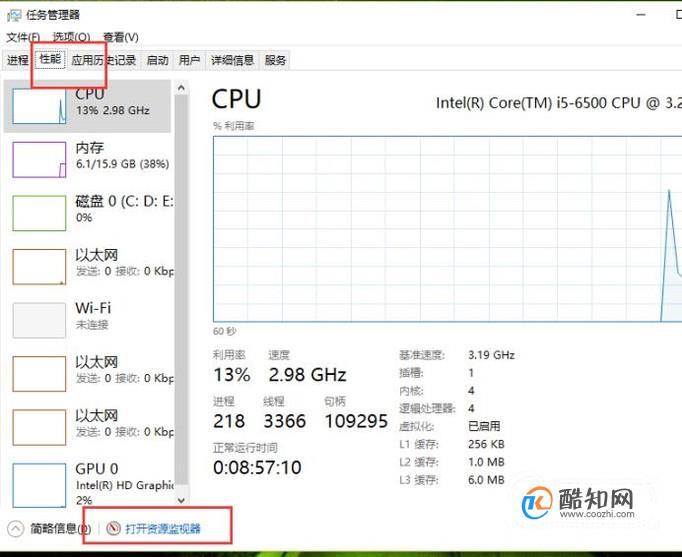
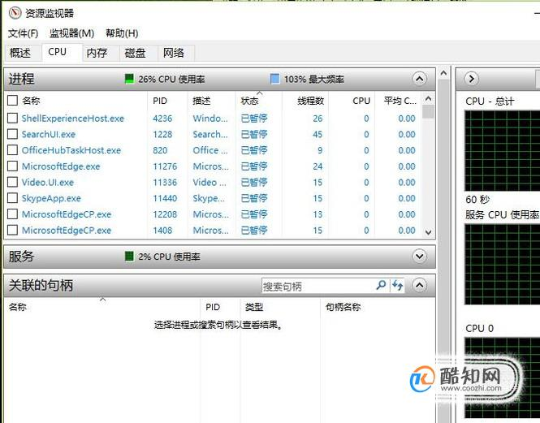
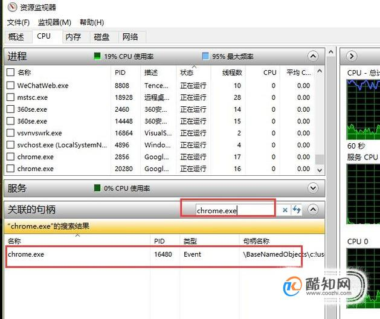
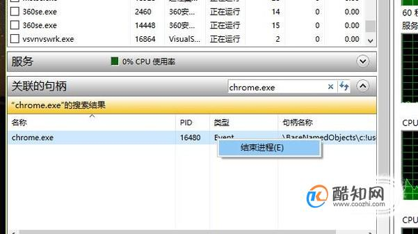

最佳经验
本文由作者推荐
我们使用windows系统的时候，有时需要删除一个文件却被提示文件被某个进程占用。那么如何查看文件被哪个进程占用呢？下面小编给大家分享一下。
工具/材料
资源管理器
操作方法
- 01
首先按下Ctrl+shift+C组合键打开资源管理器，如下图所示，选择性能，然后点击打开资源监视器
 - 02
接下来在资源监视器中选择CPU选项，如下图所示
 - 03
然后我们在底部的输入框中输入要查找的文件即可，如下图所示
 - 04
最后如果想结束占用文件的进程，那么如右键单击选择结束进程即可

HEIC图片怎么转换JPG格式？Heic图片是一种新兴的图片格式，是iOS 11更新后拍摄出来的图片默认存储格式，这种格式的图片与JPG格式图片相比，占用的内存小，画质更加无损。但是heic图片格式无法在

我们运用SPSS软件分析数据的时候，经常需要用单样本K-S检验来判断某个变量的正态分布情况。那么如何在SPSS中进行单样本K-S检验呢？下面小编给大家分享一下。
我们对数据进行描述性统计分析的时候，一般都是使用像SPSS这样的专业分析软件。其实在Excel中就可以对数据进行描述性统计分析。下面小编给大家演示一下。
我们使用Android Studio的时候，经常需要使用大量的图标，这时候就需要用Materal插件。那么如何使用呢？下面小编给大家分享一下。
文章作者
wang2CH
还没有个性签名哟
点击排行
- 2 排行
- 3 排行
- 4 排行
- 5 排行
- 6 排行
- 7 排行
- 8 排行
- 9 排行
- 10 排行